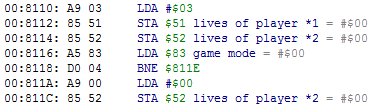

Для ознакомления с разделом требуется базовое знание окон Hex Editor и Debugger, а также инструкций процессора.
В RAM (диапазон адресов $0000-$07FF в NES Memory) хранятся динамические данные игрового процесса. Местоположение большинства адресов, в которых хранятся определенные данные, является статическим, то есть они всегда будут находиться по тому же адресу в RAM каждый раз, когда ты запускаешь игру или делаешь Reset.
В этом разделе будет рассказано про то, как именно в RAM хранятся некоторые данные, чтобы ты примерно знал что надо искать при просмотре адресов во время игры, а также про различные метода поиска этих адресов.
Зачем искать адреса
Чтобы что-то изменить в игре, нужно знать адрес, который отвечает за ту функцию, которую ты хочешь изменить. Зная правильный адрес, ты ставишь на него Read и/или Write брейкпоинт для нахождения связанного с этим адресом кода.
Например, найдя адрес с количеством жизней игрока и поставив на него Write брейкпоинт, ты обнаружишь код, который записывает это начальное количество/изменяет его после смерти игрока.
Если поставить Read брейкпоинт, тебе повстречаются программы, которые считывают это количество и что-то с ним делают, наподобие вывода количества жизней на экране или проверки на #$00 для завершения игры.
Когда код найден, то с соответствующими знаниями инструкций процессора ты сможешь отредактировать код по своему усмотрению, к примеру получать больше жизней за взятие бонуса, раздавать игрокам разное количество жизней на старте игры и так далее.
Карта RAM
Создание карты RAM означает нахождение как можно большего количества адресов и добавление на них комментариев через Hex Editor или Debugger с пометкой того, за что отвечает данный адрес.
Чем больше адресов ты найдешь и расшифруешь их значение, тем проще тебе будет изучать код, связанный с этими адресами. Все эти комментарии будут отображаться в окне Debugger'а (и в названии окна Hex Editor'а тоже), и даже с поверхностными знаниями инструкций процессора ты примерно поймешь что именно делает найденный участок кода.

Код записывает количество #$03 в адрес жизней обоих игроков, а затем проверяет режим игры и обнуляет жизни 2-го игрока, если в опциях предварительно был выбран режим "1 Player".
Большое количество расшифрованных адресов также помогает понять как устроена игра и без просмотра ее кода. Когда знаешь внутреннюю механику игры, ты сможешь выбрать лучший из множества способов отредактировать код, учтешь все возможные ситуации и снизишь шансы на появление сопутствующих багов, нежели работая с игрой практически вслепую.
Методы поиска адресов
Выбери опцию, чтобы посмотреть информацию по данному методу поиска.
NES Memory
RAM Search
Debugger
PPU Memory
Sprite Memory
NES Memory
Базовый поиск сводится к минимизации изменений в других адресах. Чем меньше байтов "шевелится" в данный игровой момент, тем проще искать нужные изменения.
Наблюдение за адресами
Достаточно взглянуть на байты в адресах, которые подсвечиваются разными цветами при их изменений. Байты меняются чаще всего тогда, когда в игре что-то происходит. Если ты двигаешься персонажем, то его координата начнет изменяться, но если персонаж стоит на месте, следовательно изменений ты не увидишь.
Поэтому самый обычный поверхностный поиск адресов осуществляется через наблюдение за адресами RAM в окне Hex Editor. При этом очень помогают сохранения игрового процесса "до" и "после" изменений.
Сравнение сохранений
Например, если твой персонаж погиб, количество жизней должно уменьшиться на #$01. Загружай по очереди то первое сохранение, то второе, параллельно наблюдая за тем, какие байты в адресах изменили свое значение.
Таким образом ты довольно быстро локализуешь адрес, в котором произошло уменьшение на #$01 относительно двух этих сохранений. А если загружать сохранения на паузе эмулятора, предварительно сбросив подсветку байтов скроллингом окна, будут подсвечиваться исключительно изменения между этими сохранениями, что еще больше упростит задачу.
Изменение и заморозка байтов
Не забывай о том, что ты можешь пробовать вручную изменять байты в адресах и замораживать их. Предварительно пользуйся сохранениями, так как заранее не знаешь какие будут последствия.
Двоичный поиск
Универсальный поиск адресов методом копирования данных между двумя сохранениями описан в отдельной статье этого раздела.
RAM Search
Инструкция по работе с окном RAM Search будет на главной странице сайта. Это окно позволяет создавать условия, или фильтры, через которые пропускаются байты в адресах и отсекаются лишние.
Если примерно представлять как именно могут храниться и изменяться данные в неком адресе, нужно немного поиграть, параллельно пропуская адреса через особые условия с учетом изменений байта в искомом адресе. По итогу фильтр пройдут лишь малое количество адресов, среди которых не составит труда найти правильный.
Чем больше у тебя опыта, тем лучше ты сможешь выставлять условия. Иногда достаточно лишь уверенности в том, что эти байты должны измениться в определенный момент, и фильтровать по данным, которые "не изменились".
Debugger
Если у тебя уже есть комментарии на адреса RAM, то при просмотре участка кода можно увидеть и другие адреса, участвующие в работе данной программы.
Если ты пока еще не знаешь за что они отвечают, то глядя на уже расшифрованные адреса и учитывая общее назначение программы, у тебя появятся мысли о том, зачем нужны эти незнакомые адреса. А подтвердить свои догадки по адресу ты можешь работая с окном Hex Editor и/или поставив на него брейкпоинты.
PPU Memory
Если игровые данные из RAM адресов выводятся на экране, например количество очков, такие адреса можно найти через видеопамять, выяснив откуда берутся значения.
Чаще всего байт из оригинального адреса будет передаваться через адреса-посредники, участвующих в работе программы вывода графики. Потребуется проследить цепочку передачи байта между несколькими адресами до оригинального адреса, а для этого нужен опыт работы с Debugger'ом и знание инструкций процессора.
Sprite Memory
Под Sprite Memory подразумевается не OAM Memory, а та область из NES Memory, которая копируется в OAM Memory.
Некоторые данные могут выводиться на экране с помощью спрайтов, а не заднего фона. Поиск по принципу похож на поиск адресов через PPU Memory - надо найти адреса в памяти спрайтов, в которые записываются нужные тайлы для спрайтов, отображенных на экране, поставить на них Write брейкпоинты и отследить цепочку записи.
Этот способ поиска несколько сложнее, чем поиск по PPU Memory, поскольку труднее локализовать нужный адрес в памяти спрайтов, чтобы затем найти откуда в него пишутся значения. Здесь тоже требуется опыт работы с Debugger'ом и знание инструкций процессора.